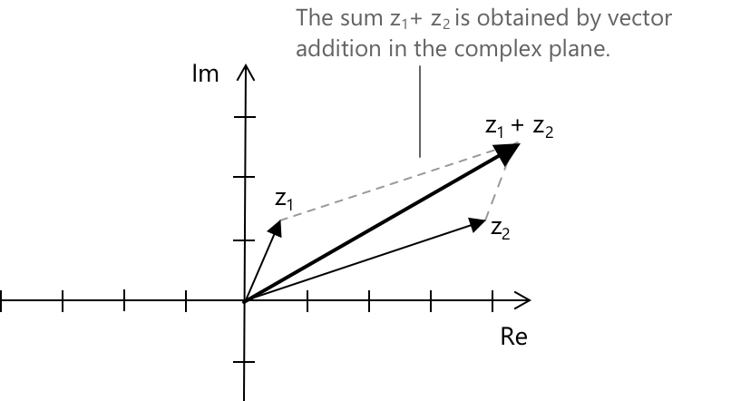

Операції з комплексними числами
Вступ
Комплексним числом \( z \) називають вираз вигляду \( z = a + bi \), де \( a \) та \( b \) є дійсними числами, а \( i \) — уявною одиницею, що характеризується визначальним відношенням \( i^2 = -1 \).
Дійсне число \( a \) називається дійсною частиною \( z \) і позначається \( \operatorname{Re}(z) \). Дійсне число \( b \) називається уявною частиною і позначається \( \operatorname{Im}(z) \). Множина всіх комплексних чисел визначається наступним чином:
\[ \mathbb{C} := \{\, z = a + bi \mid a,\, b \in \mathbb{R} \,\} \]
Кожне дійсне число \( a \in \mathbb{R} \) можна ототожнити з комплексним числом \( a + 0i \), тому \( \mathbb{R} \) природно вкладається в \( \mathbb{C} \) як підполе.
Множина \( \mathbb{C} \), оснащена операціями додавання та множення, визначеними в наступних розділах, утворює поле. Перед розглядом кожної операції окремо, корисно нагадати аксіоми поля, що керують арифметикою комплексних чисел.
-
Замкненість: для будь-яких \( z_1, z_2 \in \mathbb{C} \), сума \( z_1 + z_2 \) та добуток \( z_1 \cdot z_2 \) також належать до \( \mathbb{C} \).
-
Комутативність та асоціативність: додавання та множення є комутативними та асоціативними, за цілкою аналогією з \( \mathbb{R} \).
-
Нейтральні елементи: число \( 0 = 0 + 0i \) є нейтральним елементом за додаванням, а \( 1 = 1 + 0i \) — нейтральним елементом за множенням.
-
Протилежний елемент: для кожного \( z = a + bi \) протилежним елементом є \( -z = -a – bi \), і маємо \( z + (-z) = 0 \).
-
Обернений елемент: для кожного \( z \neq 0 \) існує єдиний \( z^{-1} \in \mathbb{C} \), такий що \( z \cdot z^{-1} = 1 \). Його явний вигляд виведено в розділі про ділення нижче.
-
Дистрибутивність: для всіх \( z_1, z_2, z_3 \in \mathbb{C} \) виконується наступна тотожність: \[ z_1 \cdot (z_2 + z_3) = z_1 \cdot z_2 + z_1 \cdot z_3 \]
Дві структурні властивості відрізняють \( \mathbb{C} \) від \( \mathbb{R} \). На відміну від \( \mathbb{R} \), поле \( \mathbb{C} \) не є впорядкованим полем: на \( \mathbb{C} \) не існує цілком порядку, сумісного з його польовими операціями, і тому такі вирази, як \( z_1 < z_2 \), є невизначеними для загальних комплексних чисел.
Ще більш визначним є те, що \( \mathbb{C} \) є алгебраїчно замкненим: кожен несталий поліном з коефіцієнтами в \( \mathbb{C} \) має принаймні один корінь у \( \mathbb{C} \). Цей результат, відомий як основна теорема алгебри, не має аналога в \( \mathbb{R} \), де поліноми, такі як \( x^2 + 1 \), не мають дійсних коренів.
Сума та різниця комплексних чисел
Сума та різниця двох комплексних чисел визначаються покомпонентно, шляхом окремих операцій над дійсними та уявними частинами. Нехай задано \( z_1 = a + bi \) та \( z_2 = c + di \), тоді визначення мають наступний вигляд.
\[ z_1 + z_2 = (a + c) + (b + d)i \] \[ z_1 – z_2 = (a – c) + (b – d)i \]
Нехай \( z_1 = 2 – 3i \) та \( z_2 = 3 + 5i \). Щоб обчислити \( z_1 – z_2 \), ми віднімаємо дійсні частини та уявні частини окремо. Віднімання \( z_2 \) еквівалентне додаванню протилежного елемента \( -z_2 = -3 – 5i \), тому операція зводиться до покомпонентного віднімання.
\[ \begin{align} z_1 - z_2 &= (2 - 3i) - (3 + 5i) \\[6pt] &= (2 - 3) + (-3 - 5)i \\[6pt] &= -1 - 8i \end{align} \]
Нехай \( z_1 = -4 + 2i \) та \( z_2 = 6 – 7i \). Щоб обчислити \( z_1 + z_2 \), ми додаємо дійсні частини та уявні частини окремо, оскільки додавання в \( \mathbb{C} \) за визначенням діє покомпонентно.
\[ \begin{align} z_1 + z_2 &= (-4 + 2i) + (6 – 7i) \\[6pt] &= (-4 + 6) + (2 – 7)i \\[6pt] &= 2 – 5i \end{align} \]
Сума та різниця комплексних чисел успадковують від структури поля \( \mathbb{C} \) всі алгебраїчні властивості, що виконуються в \( \mathbb{R} \): комутативність, асоціативність та дистрибутивність відносно множення.
З геометричної точки зору комплексні числа можна інтерпретувати як вектори на комплексній площині, де горизонтальна вісь представляє дійну частину, а вертикальна вісь — уявну частину. Дано два комплексні числа \( z_1 \) та \( z_2 \), представлені як вектори з початку координат; їхня сума \( z_1 + z_2 \) відповідає додаванню векторів за правилом паралелограма.
-
Вектор, що відповідає \( z_2 \), переноситься так, щоб його початок збігався з кінцем вектора, що відповідає \( z_1 \).
-
Вектор, проведений від початку координат до нового кінця, представляє отримане комплексне число \( z_1 + z_2 \).

Ці дві конструкції разом забезпечують повну геометричну інтерпретацію додавання та віднімання на комплексній площині.
Різниця \( z_1 - z_2 \) отримується шляхом додавання \( z_1 \) до протилежного елемента \( -z_2 \), вектор якого є відображенням \( z_2 \) відносно початку координат. Геометрично \( z_1 - z_2 \) відповідає вектору від кінця \( z_2 \) до кінця \( z_1 \), коли обидва вектори виходять з початку координат.
Добуток комплексних чисел
Добуток двох комплексних чисел визначається шляхом застосування розподільного закону та фундаментального співвідношення \( i^2 = -1 \). Дано \( z_1 = a + bi \) та \( z_2 = c + di \); розкриття добутку дає наступне.
\[ (a + bi)(c + di) = (ac - bd) + (ad + bc)i \]
Цю формулу не обов'язково запам'ятовувати як правило: вона є просто результатом розподільного множення та підстановки \( i^2 = -1 \), як показано в прикладах нижче.
Важливою властивістю множення в \( \mathbb{C} \) є мультиплікативність модуля. Нагадаємо, що модуль \( z = a + bi \) визначається як \( |z| = \sqrt{a^2 + b^2} \); можна перевірити, що для будь-яких \( z_1, z_2 \in \mathbb{C} \) виконується наступна тотожність.
\[ |z_1 \cdot z_2| = |z_1| \cdot |z_2| \]
Це означає, що множення масштабує модулі двох множників. Та сама тотожність поширюється на ділення: для будь-яких \( z_1, z_2 \in \mathbb{C} \) при \( z_2 \neq 0 \) маємо наступне.
\[ \left|\frac{z_1}{z_2}\right| = \frac{|z_1|}{|z_2|} \]
Геометричне значення обох тотожностей стає повністю прозорим у тригонометричному представленні, де при множенні аргументи додаються, а при діленні — віднімаються.
Властивості комплексного спряженого числа
Комплексне спряжене число задовольняє кільком алгебраїчним тотожностям, що випливають безпосередньо з його означення. Нехай \( z, z_1, z_2 \in \mathbb{C} \). Операція спряження є інволюцією, що означає, що її подвійне застосування повертає початкове число:
\[ \overline{\overline{z}} = z \]
Спряження сумісне з додаванням, відніманням та множенням у наступному сенсі:
\[ \overline{z_1 + z_2} = \overline{z_1} + \overline{z_2} \] \[ \overline{z_1 – z_2} = \overline{z_1} - \overline{z_2} \] \[ \overline{z_1 \cdot z_2} = \overline{z_1} \cdot \overline{z_2} \]
Ці тотожності показують, що спряження є автоморфізмом поля \( \mathbb{C}. \) Воно зберігає алгебраїчну структуру поля, залишаючи незмінним кожен елемент \( \mathbb{R}.\) Нарешті, добуток комплексного числа на його спряжене число дає квадрат модуля, що є невипадковою дійсною величиною.
\[ z \cdot \overline{z} = a^2 + b^2 = |z|^2 \]
Ця остання тотожність є ключовим кроком в обчисленні як оберненого елемента, так і частки комплексних чисел: множення знаменника на його спряжене число дає дійсне число \( |z|^2, \) на яке потім можна поділити, не залишаючи уявної частини.
Автоморфізм поля — це бієктивне відображення поля в самого себе, яке зберігає додавання та множення. Спряження задовольняє цій умові, і оскільки воно залишає незмінним кожне дійсне число, воно є автоморфізмом \( \mathbb{C} \) над \( \mathbb{R} \).
Ділення комплексних чисел
Щоб поділити два комплексних числа, ми множимо і чисельник, і знаменник на комплексне спряжене до знаменника. Це усуває уявну частину зі знаменника і зводить частку до стандартного вигляду. Дано \( z_1 = a + bi \) та \( z_2 = c + di \), де \( z_2 \neq 0 \); спряжене до знаменника число має вигляд \( \overline{z_2} = c - di \), і процедура починається наступним чином.
\[ \frac{a + bi}{c + di} = \frac{(a + bi)(c - di)}{(c + di)(c - di)} \]
Оскільки \( (c + di)(c - di) = c^2 + d^2 \), що є строго додатнім дійсним числом, коли \( z_2 \neq 0 \), частка зводиться до наступного явного вигляду.
\[ \frac{a + bi}{c + di} = \frac{ac + bd}{c^2 + d^2} + \frac{bc - ad}{c^2 + d^2}\,i \]
Як і у випадку з множенням, цю замкнену форму не обов'язково запам'ятовувати: більш повчальним є множення на спряжене число безпосередньо в кожному окремому випадку.
Нехай \( z_1 = 5 + 3i \) та \( z_2 = 2 – i \). Щоб обчислити частку \( z_1 / z_2 \), ми множимо і чисельник, і знаменник на спряжене до знаменника число, яке дорівнює \( \overline{z_2} = 2 + i \). Оскільки ми множимо на \( \overline{z_2} / \overline{z_2} = 1 \), значення виразу не змінюється, тоді як знаменник стає додатнім дійсним числом.
\[ \begin{align} \frac{5 + 3i}{2 - i} &= \frac{(5 + 3i)(2 + i)}{(2 – i)(2 + i)} \\[6pt] &= \frac{10 + 5i + 6i + 3i^2}{4 + 1} \\[6pt] &= \frac{10 + 11i + 3(-1)}{5} \\[6pt] &= \frac{7 + 11i}{5} \\[6pt] &= \frac{7}{5} + \frac{11}{5}\,i \end{align} \]
Обернене до комплексного числа
Оберненим до ненульового комплексного числа \( z = a + bi \) є мультиплікативний обернений елемент \( z^{-1} \), визначений умовою \( z \cdot z^{-1} = 1 \). Це особливий випадок ділення з чисельником, що дорівнює \( 1 \), і обчислюється за тією ж технікою: множенням чисельника та знаменника на спряжене число \( \overline{z} = a - bi \). Загальна формула має наступний вигляд.
\[ z^{-1} = \frac{1}{a + bi} = \frac{a - bi}{a^2 + b^2} = \frac{a}{a^2 + b^2} – \frac{b}{a^2 + b^2}\,i \]
Нехай \( z = 3 – 2i \). Щоб обчислити \( z^{-1} \), ми множимо чисельник і знаменник на спряжене число \( \overline{z} = 3 + 2i \). Знаменник стає \( |z|^2 = 3^2 + 2^2 = 13 \), що є додатнім дійсним числом, тому вираз зводиться до стандартного комплексного числа.
\[ \begin{align} \frac{1}{3 - 2i} &= \frac{3 + 2i}{(3 – 2i)(3 + 2i)} \\[6pt] &= \frac{3 + 2i}{9 + 4} \\[6pt] &= \frac{3 + 2i}{13} \\[6pt] &= \frac{3}{13} + \frac{2}{13}\,i \end{align} \]
Множення та ділення в тригонометричній формі
Операції множення та ділення набувають особливо прозорої геометричної інтерпретації, коли комплексні числа виражені в тригонометричній або експоненціальній формі. Розглянемо наступні комплексні числа: \[ z_1 = r_1(\cos\theta_1 + i\sin\theta_1) \] \[ z_2 = r_2(\cos\theta_2 + i\sin\theta_2) \]
Їхній добуток і частка мають наступний вигляд:
\[ z_1 \cdot z_2 = r_1 r_2 \bigl(\cos(\theta_1 + \theta_2) + i\sin(\theta_1 + \theta_2)\bigr) \] \[ \frac{z_1}{z_2} = \frac{r_1}{r_2} \bigl(\cos(\theta_1 – \theta_2) + i\sin(\theta_1 - \theta_2)\bigr) \]
Отже, множення масштабує модулі та додає аргументи, тоді як ділення ділить модулі та віднімає аргументи. Ця геометрична структура повністю прихована в алгебраїчній формі \( a + bi \) і стає помітною лише в тригонометричному та експоненціальному представленнях комплексних чисел.